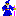

The Ultima Dragons are a large virtual club founded in 1992 on Prodigy who have since moved to the Internet due to Prodigy's outrageous rate structure. The club is dedicated to helping others with their Ultima questions, discussing Ultima, and, most obviously, sharing information and creative exploits.
If you have played an Ultima, are willing to help others with their Ultima questions, and would like to be a member of the Ultima Dragons, please fill out the join form (Or e-mail join@udic.org with your real name, e-mail address, and chosen Dragon name). A Dragon on the greeting team will send you email within a week, welcoming you to the club.
 Find Ultima help on the three Usenet newsgroups: rec.games.computer.ultima.dragons , rec.games.computer.ultima.online , and rec.games.computer.ultima.series .